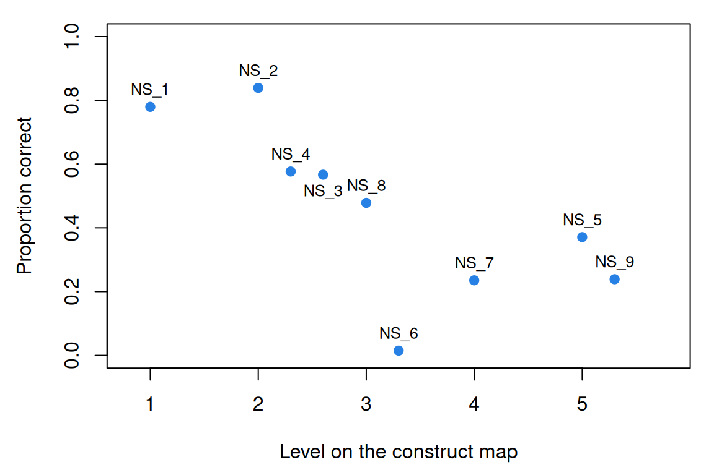

Constructs and construct maps
What this is for
Before we ask how well a test measures something, we have to say what the something is. What is measurement? called the attribute we are after a construct. This lesson asks what a statement of one should contain. The answer we build on is the construct map, from Mark Wilson’s approach to constructing measures: a line from less to more of the construct, with a description of what respondents at each point can do. A good map orders the items before anyone answers them, and it tells a teacher what to work on next. We try both tests, the first on nine number-series items from the IRW, and ask whether a construct has to be a continuum at all.
Goals
By the end of this lesson you should be able to:
- say what a construct is, and write the kind of sentence that gives one its meaning;
- draw a construct map for a construct you care about, with respondents and items on one line;
- test a proposed construct: does it order items before data, and suggest what to teach next?
- say why summary statistics find it hard to tell a continuous construct from latent classes;
- contrast a test built from a construct map with one built from a blueprint, and say what each lets you claim.
Core ideas
What is a construct?
We can’t observe reading comprehension, so we need an account of it that tells us which items to write and how to read the responses. Cronbach and Meehl (1955) gave the classic definition: a construct is an attribute of people that we postulate, and assume shows up in test performance. Its meaning, they argued, lies in claims of one form: “Persons who possess this attribute will, in situation X, act in manner Y (with a stated probability)” (Cronbach & Meehl, 1955, p. 284).
That sentence carries much of this course. “Situation X” is the item; “manner Y” is the response. “With a stated probability” makes the link probabilistic, the premise of every item response model from The Rasch model on. And “possess this attribute” is left open: Cronbach and Meehl allow a qualitative attribute (their example is amnesia) as well as a degree of a quantitative one (cheerfulness). We come back to that choice below.
The definition also makes a construct something we propose and could be wrong about. Nobody finds anxiety lying on the pavement; we postulate it because it organizes what people do, and keep it while its predictions hold up. Validity as an argument turns this into a method.
A construct map
The Cronbach–Meehl definition says what a construct is for, but not what a statement of one should look like. Mark Wilson’s approach to constructing measures, which grew out of the BEAR Assessment System (Wilson & Sloane, 2000), makes the construct map its first building block (Wilson, 2005). It builds on the Rasch tradition of placing respondents and items on one scale, the picture the Wright map draws. A construct map is a line. At one end are respondents with little of the construct, at the other end respondents with a lot, and along it are qualitatively described levels: what a respondent at each point typically knows, believes or can do. Beside the respondents, on the same line, sit the items, each placed at the level its response indicates. The map assumes the construct is a single continuum (one line, not two), an assumption Factor analysis I and Dimensionality put to the test.
What does a map look like in practice? California’s Desired Results Developmental Profile (DRDP), which early-childhood teachers use to rate children’s development, is a set of them (California Department of Social Services & California Department of Education, 2025, developed with the Berkeley Evaluation and Assessment Research Center). Each measure is a continuum cut into named levels (Responding, Exploring, Building and, for older children, Integrating and Extending), each with a descriptor and examples. In problem solving, a child at the earliest level notices people and objects; later, the child copies a strategy an adult has shown; later still, the child stops to look at a problem before choosing how to tackle it. The teacher marks the latest level mastered.
Try it: respondents and items on one line
On the left is a construct map for solving number series, the construct behind our real-data example. Move the respondent along the line; on the right is the chance that they solve an item at each level. The locations and curve are stylized.
Items below the respondent are likely to be solved, items above likely to be missed. Item response models draw this picture with estimated numbers: the Wright map in The Rasch model puts respondents and items on one scale, and Information, precision, and short forms asks where on the line a test measures well.
The number-series items on the map
Here are the nine items we analyse later, placed on the lesson’s map from their text alone. Each asks for the missing number.
| Level | What the solver has to find | Items |
|---|---|---|
| 1 | the same step every time | NS_1: 10, 4, __, −8, −14, −20 |
| 2 | a step that changes by a simple pattern (it alternates, or grows by one) | NS_2: 3, 6, 10, 15, 21, __ NS_3: 121, 100, 81, __, 49 NS_4: 3, 10, 16, 23, __, 36 |
| 3 | a step that changes by multiplication | NS_6: 200, 198, 192, 174, __ NS_8: 10000, 9000, __, 8890, 8889 |
| 4 | two sequences interleaved in one | NS_7: 3, 2, 10, 4, 19, 6, 30, 8, __ |
| 5 | two sequences side by side, as fractions | NS_5: 3/21, __, 13/11, 18/6, 23/1, 28/−4 NS_9: 3/4, 4/6, 6/8, 8/12, __ |
If the map is right, items should get harder as you go down the table. Before looking at any data, commit to a guess.
The map predicts that the hardest item comes from level 4 or 5. The data will say whether it does, and, when an item disagrees, whether the map is at fault.
Two tests for a proposed construct
How do we know a construct map is any good before we have data? Two questions help.
- Does the map order the items? Items written for a higher level should be harder (on an attitude scale, less often endorsed) than items for a lower one. This is a prediction made before any data, and the data can refute it. Gathering validity evidence treats the ordering as evidence about a test’s internal structure.
- Does the map suggest an intervention? A well-articulated map should say how to move someone up it: what a respondent at level 2 has to learn, or give up, to reach level 3. If no plan for teaching can be read off the map, its levels probably describe performances rather than the construct behind them.
The second test is easiest to see by comparison. One description is a construct map for students’ understanding of the Earth in the Solar System, from a project that wrote multiple-choice items whose answer options are each linked to a level (Briggs, Alonzo, Schwab & Wilson, 2006, Figure 2). Another is the achievement-level descriptors for grade 4 NAEP geography, which say what Basic, Proficient and Advanced students should be able to do (National Assessment Governing Board, 2001). The DRDP is the third. All three are summarized in our own words.
Try it: what would you teach next?
Pick a description and a level to see what a student there knows, what holds them back (if the description says) and what the next level asks for.
Step through the astronomy map from level 1 to level 3. Each level names a belief the student must give up to move on (that the Earth is flat, that the Sun circles the Earth, that the Earth can’t spin and orbit at once), and that is a lesson plan: teach against the belief. The NAEP descriptors list performances; the Proficient list asks for more than the Basic list, but doesn’t say what a Basic student is missing or what to teach first. The DRDP sits between them: its levels describe a progression, from trial and error to planning, but name no belief to overcome.
Which is the better construct map? The descriptions were written for different jobs. Achievement-level descriptors say what a score above a cut point means, for reporting to the public, and for that job they are a reasonable choice. A construct map describes the construct itself, and for that job I think the astronomy map comes much closer to the ideal: because each level names the misconception to overcome next, it implies what to teach, and the descriptors don’t.
A continuum, or classes?
A construct map assumes the construct varies continuously: anyone could sit anywhere on the line. That is a claim about the attribute, like the thermometers’ question, and it could be false. Some influential theories are categorical. Moffitt (1993) proposed that young people who behave antisocially fall into two groups with different causes: a small group antisocial at every age, and a larger group antisocial only in adolescence. A follow-up of a New Zealand birth cohort to age 26 kept both and found a third, men aggressive as children but not very delinquent as adolescents (Moffitt, Caspi, Harrington & Milne, 2002). These are latent classes: unobserved groups inside each of which people are alike.
Which account fits is an empirical question. Taxometric analysis, developed by Meehl and colleagues, asks whether a latent variable is a category or a dimension (Meehl, 1995). A review of 311 taxometric findings estimated that about 14% were taxonic (categorical) once study design was accounted for, with little persuasive evidence for categories in normal personality or in mood or anxiety disorders (Haslam, Holland & Kuppens, 2012). My prior follows that review: the constructs we measure vary much more often continuously than categorically. It is a prior, though, and the widget shows why response data rarely settle it.
Try it: continuum or classes?
Two samples of 1,000 respondents answer ten items. One comes from a continuum (locations drawn from a normal distribution with SD 1), the other from four ordered latent classes, with item locations set so that every item has the same expected proportion correct in both. Which is which? Decide before you reveal.
With the classes one unit apart, which gives them about the spread of the continuum, the histograms, SDs and item-rest correlations are close to indistinguishable; try a few seeds. Only when the classes are pulled well apart, around 2.5 or 3, do they show, as a flatter sum-score distribution with more respondents at the extremes. Ordered classes close together behave very much like a continuum cut into pieces, so data that fit one don’t rule out the other. Telling them apart takes models fit to the item responses and predictions that differ between the accounts; Latent classes and cognitive diagnosis takes this up.
A different starting point: blueprints
Not every test starts from a construct map. Licensure exams, admissions tests and many state school tests start from a domain, the knowledge and skills to be covered, and a blueprint (the test specifications) saying how many items of each kind to draw from each part of it. The Standards for Educational and Psychological Testing treat specifications as the first product of test design: content and its weighting, item formats, length and scoring (AERA, APA & NCME, 2014, ch. 4). The claim such a test supports is about the domain: this candidate answered 80% of a representative sample of what a new nurse should know. Sometimes the aim is a minimum standard: the written driving test checks that you know the rules of the road, and needs no theory of how that knowledge develops.
A blueprint is a reasonable choice when the domain can be listed and the use is a decision about coverage, as in licensure. It doesn’t offer the construct map’s two tests: it predicts no item order and suggests nothing to teach beyond the list. It offers content evidence instead, the argument that the items represent the domain (Validity as an argument), and a view of items as a sample from a larger pool (Many sources of error).
Simulate
The code below simulates 2,000 respondents twice: on a continuum with ten items at five levels, and from four ordered latent classes whose item locations give every item the same expected proportion correct. It prints item means, item-rest correlations and sum-score distributions side by side, in base R, in about a second.
With the seed as written and the classes one unit apart (sep <- 1), the item means agree to within 0.03, the item-rest correlations to within 0.04, and the sum-score SDs are 2.07 and 2.11. Now set sep <- 3. The item means still match (by construction), but the item-rest correlations under the classes run from 0.48 to 0.72, against 0.23 to 0.34 for the continuum, and the sum-score SD rises to 2.96. Try other class sizes in share, or two classes. How far apart must two classes be before you would bet on them from sum scores alone?
Download this code to run it in your own R session.
With real data
Our table is himmelstein-number_series-2025: nine number-series items from the Forecasting Proficiency Test, a battery built to identify people who forecast well (Himmelstein et al., 2025; materials and data at forecastingresearch/fpt), which adapted the task from earlier work including Dieckmann, Gregory, Peters & Hartman (2017). Its job here is to test a construct map: does a map written from the items’ text order them before we see responses? Download the code; it needs only base R.
Code
# The IRW table, from the CSV link on its landing page (pinned to one version).
ns_url <- "https://redivis.com/api/v1/tables/datapages.item_response_warehouse_2:v22_0.himmelstein-number_series-2025/rows?format=csv"
ns <- read.csv(ns_url)
head(ns[, c("id", "item", "resp", "rt", "wave")])| id | item | resp | rt | wave |
|---|---|---|---|---|
| 03spmysv917pRTSkTcj6 | NS_1 | 0 | 11 | 3 |
| 03spmysv917pRTSkTcj6 | NS_8 | 0 | 26 | 3 |
| 03spmysv917pRTSkTcj6 | NS_6 | 0 | 31 | 3 |
| 03spmysv917pRTSkTcj6 | NS_9 | 0 | 24 | 3 |
| 03spmysv917pRTSkTcj6 | NS_7 | 0 | 31 | 3 |
| 0800TgdtDlffSfpuNw07 | NS_6 | 0 | 25 | 5 |
Code
# The nine sequences, as shown to respondents, from the test's source code
# (forecastingresearch/fpt, materials/js/number_series_task.js), with the answer
# the scoring key accepts (data_cognitive_tasks/task_datasets/data_number_series.csv).
# `level` is the construct map in the lesson, written from the text alone:
# 1 the same step every time
# 2 the step changes by a simple pattern (it alternates, or grows by one)
# 3 the step changes by multiplication
# 4 two sequences interleaved in one
# 5 two sequences side by side, as fractions
items <- data.frame(
item = paste0("NS_", 1:9),
series = c("10, 4, __, -8, -14, -20", "3, 6, 10, 15, 21, __", "121, 100, 81, __, 49",
"3, 10, 16, 23, __, 36", "3/21, __, 13/11, 18/6, 23/1, 28/-4",
"200, 198, 192, 174, __", "3, 2, 10, 4, 19, 6, 30, 8, __",
"10000, 9000, __, 8890, 8889", "3/4, 4/6, 6/8, 8/12, __"),
key = c("-2", "28", "64", "29", "8/16", "165", "43", "8900", "12/16"),
level = c(1, 2, 2, 2, 5, 3, 4, 3, 5)
)
items[, c("item", "series", "level")]| item | series | level |
|---|---|---|
| NS_1 | 10, 4, __, -8, -14, -20 | 1 |
| NS_2 | 3, 6, 10, 15, 21, __ | 2 |
| NS_3 | 121, 100, 81, __, 49 | 2 |
| NS_4 | 3, 10, 16, 23, __, 36 | 2 |
| NS_5 | 3/21, __, 13/11, 18/6, 23/1, 28/-4 | 5 |
| NS_6 | 200, 198, 192, 174, __ | 3 |
| NS_7 | 3, 2, 10, 4, 19, 6, 30, 8, __ | 4 |
| NS_8 | 10000, 9000, __, 8890, 8889 | 3 |
| NS_9 | 3/4, 4/6, 6/8, 8/12, __ | 5 |
Responses are scored 1 for correct, so higher means more of the construct. The wave column merits a look before we pool. Waves 3 and 5 of the seven-wave study held the cognitive tests, and each participant was randomly assigned to take this block in one of them (Himmelstein et al., 2025, sec. 2.1), so each respondent appears once and we can pool. Each item had a 30-second limit (number_series_task.js); an unanswered item is simply missing from the table.
Code
# Waves 3 and 5 were the two cognitive-test waves; each respondent took the number
# series once, in whichever of the two waves it was randomly assigned to. Each item
# had a 30-second limit, and an item left unanswered is simply absent from the table.
table(wave = tapply(ns$wave, ns$id, function(w) paste(unique(w), collapse = "+")))wave
3 5
569 620 Code
n_resp <- length(unique(ns$id))
n_resp[1] 1189Code
table(ns$resp) # 1 = correct
0 1
4740 4359 Code
answered <- table(factor(ns$item, levels = items$item))
answered # respondents who answered each item (out of n_resp)
NS_1 NS_2 NS_3 NS_4 NS_5 NS_6 NS_7 NS_8 NS_9
1133 1154 1043 1070 855 877 816 1104 1047 Of 1,189 respondents, 1,154 answered NS_2 but only 816 answered NS_7. The hard-looking items go unanswered most, so we compute proportions correct two ways: among those who answered, and counting unanswered as wrong. The map puts NS_6, whose steps triple (2, 6, 18), at level 3 with NS_8, whose steps shrink tenfold (1,000, 100, 10, 1). Was your guess right?
Code
# Proportion correct among those who answered, and counting an unanswered item as
# incorrect, next to the level the map gives each item. Spearman's correlation
# compares the two orders: -1 would mean every higher level is harder.
items$answered <- as.vector(answered)
items$p <- as.vector(tapply(ns$resp, factor(ns$item, levels = items$item), mean))
items$p_all <- as.vector(tapply(ns$resp, factor(ns$item, levels = items$item), sum)) / n_resp
map <- items[order(items$level, -items$p), c("item", "series", "level", "answered", "p", "p_all")]
print(transform(map, p = round(p, 3), p_all = round(p_all, 3)), row.names = FALSE) item series level answered p p_all
NS_1 10, 4, __, -8, -14, -20 1 1133 0.779 0.743
NS_2 3, 6, 10, 15, 21, __ 2 1154 0.839 0.814
NS_4 3, 10, 16, 23, __, 36 2 1070 0.577 0.519
NS_3 121, 100, 81, __, 49 2 1043 0.567 0.497
NS_8 10000, 9000, __, 8890, 8889 3 1104 0.478 0.444
NS_6 200, 198, 192, 174, __ 3 877 0.015 0.011
NS_7 3, 2, 10, 4, 19, 6, 30, 8, __ 4 816 0.235 0.161
NS_5 3/21, __, 13/11, 18/6, 23/1, 28/-4 5 855 0.371 0.267
NS_9 3/4, 4/6, 6/8, 8/12, __ 5 1047 0.239 0.210Code
# Three versions: all nine items; counting unanswered as wrong; leaving out NS_6.
round(c(all_items = cor(items$level, items$p, method = "spearman"),
unanswered_wrong = cor(items$level, items$p_all, method = "spearman"),
without_NS_6 = cor(items$level[-6], items$p[-6], method = "spearman")), 2) all_items unanswered_wrong without_NS_6
-0.76 -0.76 -0.85 Code
# Items that share a level are spread a little sideways so their labels don't overlap.
x <- items$level + (ave(items$p, items$level, FUN = function(v) rank(-v)) - 1) * 0.3
par(mar = c(4.5, 4.5, 1, 1))
plot(x, items$p, pch = 19, col = "#2780e3", xlim = c(0.8, 5.8), ylim = c(0, 1),
xlab = "Level on the construct map", ylab = "Proportion correct", xaxt = "n")
axis(1, at = 1:5)
text(x, items$p, items$item, pos = ifelse(items$item == "NS_3", 1, 3), cex = 0.8)
The map does fairly well: the rank correlation between level and proportion correct is −0.76 (−1 would mean every higher level is harder), unchanged when unanswered items count as wrong. Two items are out of place in the mild way a first draft should expect. NS_2 (3, 6, 10, 15, 21) is easier than the level-1 NS_1, perhaps because its step grows by exactly one each time, the gentlest change a step can make. NS_5, a fraction item at level 5, is easier than the interleaved NS_7: its numerators and denominators each change by a constant step, so it may belong lower. Without NS_6, the rank correlation is −0.85.
NS_6 is out of place by a wide margin (1.5% correct, against 48% for NS_8 at the same level), and its text doesn’t explain why: tripling steps are no harder in principle than steps that shrink tenfold. The IRW table keeps only the 0/1 score, so we read what respondents typed from the source data.
Code
# What did respondents type for NS_6? The IRW table keeps only the 0/1 score, so we
# read the answers from the source data (pinned to one commit of the FPT repository)
# and keep the sessions that are in the IRW table.
src_url <- paste0("https://raw.githubusercontent.com/forecastingresearch/fpt/",
"fdbe605700cc172c03abe009bbd894a20f5cb69b/",
"data_cognitive_tasks/task_datasets/data_number_series.csv")
src <- read.csv(src_url, colClasses = "character")
ns6 <- src$ns_response[src$ns_id == "NS_6" & src$session_id %in% ns$cov_session_id]
ns6 <- ns6[!is.na(ns6) & ns6 != ""]
length(ns6) # respondents who answered NS_6[1] 877Code
head(sort(table(ns6), decreasing = TRUE), 5) # the most common answersns6
150 120 164 160 156
106 101 73 64 52 Code
c(answered_165 = sum(ns6 == "165"), answered_120 = sum(ns6 == "120"))answered_165 answered_120
13 101 Code
round(c(p_as_keyed = mean(ns6 == "165"), p_if_120_were_keyed = mean(ns6 == "120")), 3) p_as_keyed p_if_120_were_keyed
0.015 0.115 Most who answered didn’t type the keyed 165: 101 typed 120, the answer the tripled steps give (174 − 54), against 13 for 165. I can’t find the rule that leads to 165; the key may encode a pattern I haven’t seen, or record a slip. Scored with 120, NS_6 would be solved by 11.5% of those who answered: still the hardest item, but at about half the rate of NS_7 and NS_9 (0.24) rather than a sixteenth. Either way, its place in the data is mostly a fact about its key, not the construct. The map is what made the item look wrong.
My working rule: when an item lands far from where the construct map puts it, I read the item and its key before I revise the map. AI and psychometrics returns to these nine items as a check on its own pipeline.
Problems
- Two classes, one sum. A proportion \(\pi\) of respondents are in class 1, the rest in class 2, and a respondent in class \(k\) answers item \(i\) correctly with probability \(p_{ik}\), independently across items. Derive the item’s mean and the covariance of items \(i\) and \(j\). Show that every covariance is positive when every item is easier in class 2. What does that imply for positive inter-item correlations as evidence of a continuum?
- The out-of-place item. Which item other than NS_6 is most out of place relative to the lesson’s map? Propose a reason from its text, and say what data would test it (the
rtcolumn may help). - Your sentence. Write the Cronbach–Meehl sentence for a construct you work with, for three different situations. Does your construct pass the intervention test?
- Design a map. Sketch a four-level construct map for a construct of your choice: a description at each level, what holds a respondent there, and one item per level. Ask someone to order your items before seeing your levels.
- Blueprint or map? A nursing board licenses nurses with an exam built from a blueprint; a hospital wants a scale of clinical judgment built from a construct map. For each, what can a score claim, what evidence would the claim need, and what question could it not answer?
- Challenge: is antisocial behaviour a continuum? What data would convince you that antisocial behaviour is a continuum rather than Moffitt’s categories, and what would convince you it isn’t? Consider predictions about change over time, not only the distribution at one age. This is open.
Going further
- Cronbach, L. J., & Meehl, P. E. (1955). Construct validity in psychological tests. Psychological Bulletin, 52(4), 281–302. https://doi.org/10.1037/h0040957. Where the idea of a construct, and of validating one, comes from.
- Wilson, M. (2005). Constructing measures: An item response modeling approach. Lawrence Erlbaum. https://doi.org/10.4324/9781410611697. Construct maps, and the steps from a map to items to a measurement model, at book length.
- Briggs, D. C., Alonzo, A. C., Schwab, C., & Wilson, M. (2006). Diagnostic assessment with ordered multiple-choice items. Educational Assessment, 11(1), 33–63. https://doi.org/10.1207/s15326977ea1101_2. The astronomy construct map, and items whose answer options point to levels.
- National Assessment Governing Board. (2001). NAEP achievement levels 1992–1998 for geography. https://www.nagb.gov/content/dam/nagb/en/documents/publications/achievement/naep-geography-achievement-levels-1992-1998.pdf. The descriptors compared with the astronomy map, with sample items at each level.
- California Department of Social Services & California Department of Education. (2025). DRDP (2025): An early childhood developmental continuum. https://www.desiredresults.us/desired-results-system/drdp-2025-instrument-and-forms. A working instrument built as a set of construct maps.
- Moffitt, T. E. (1993). Adolescence-limited and life-course-persistent antisocial behavior: A developmental taxonomy. Psychological Review, 100(4), 674–701. https://doi.org/10.1037/0033-295X.100.4.674. A categorical theory of an important construct, and the reasons for it.
- Haslam, N., Holland, E., & Kuppens, P. (2012). Categories versus dimensions in personality and psychopathology: A quantitative review of taxometric research. Psychological Medicine, 42(5), 903–920. https://doi.org/10.1017/S0033291711001966. What taxometric studies have found, across 311 findings.
- Bartholomew, D. J., Knott, M., & Moustaki, I. (2011). Latent variable models and factor analysis: A unified approach (3rd ed.). Wiley. https://doi.org/10.1002/9781119970583. Latent class and latent trait models as members of one family.
- AERA, APA, & NCME. (2014). Standards for educational and psychological testing. American Educational Research Association. https://www.testingstandards.net/open-access-files.html. Chapter 4 covers test specifications; open access.
Data sources
Data from the Item Response Warehouse (each table name links to its IRW page); references from IRW biblio.
himmelstein-number_series-2025: Himmelstein, Mark, Sophie Ma Zhu, Nikolay Petrov, Ezra Karger, Jessica Helmer, Sivan Livnat, Amory Bennett, Page Hedley, and Phil Tetlock. “The Forecasting Proficiency Test: A General Use Assessment of Forecasting Ability”. PsyArXiv, November 23, 2025. doi:10.31234/osf.io/a7kdx_v8. https://doi.org/10.31234/osf.io/a7kdx_v8. Licence: CC BY 4.0.
For instructors
- Source: EDUC 252 class 2 (slides c2, “Constructs” through “A different view: Test ‘blueprints’”, slides 3–17). The number-series analysis is new.
- Timing: about 45 minutes for the core ideas and widgets; the real-data section works as a 20-minute lab, and problem 4 as a small-group activity.
- Changed from 252: the slides show the astronomy map and the NAEP descriptors as images; here both are paraphrased (the astronomy figure is © WestEd 2002, in Briggs et al., 2006), and the DRDP example uses the current (2025) instrument. The Cronbach–Meehl definition is paraphrased except for its one key sentence. The slide’s “80s music” example is left out. The slides list four Moffitt groups (abstainers, recoveries, life-course-persistent, adolescence-limited); here the lesson gives the two groups of Moffitt (1993) and the third found at age 26 (Moffitt et al., 2002).
- Held back: writing items from a map (in From construct map to items); latent class models fit to data (in Latent classes and cognitive diagnosis); whether an intervention changes the construct or only some items (in Measurement invariance under treatment and life events); the causal reading of a construct (in Validity as causation).
- Item text: the nine sequences and their keys are from the test’s public materials (forecastingresearch/fpt:
materials/js/number_series_task.jsanddata_cognitive_tasks/task_datasets/data_number_series.csv); the paper describing the test is CC BY 4.0. - Solutions: held back in
solutions/constructs.qmd(not published). Problem 6 is open.